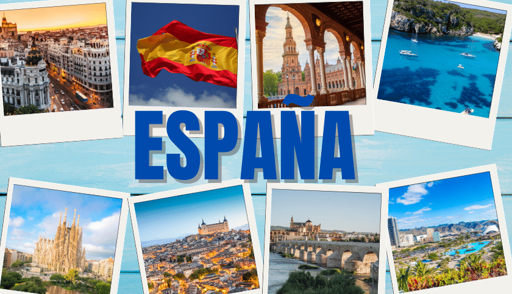
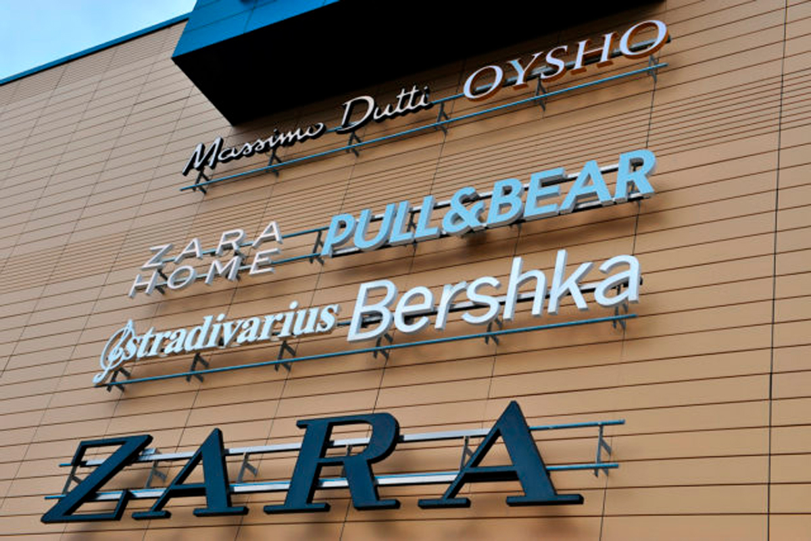
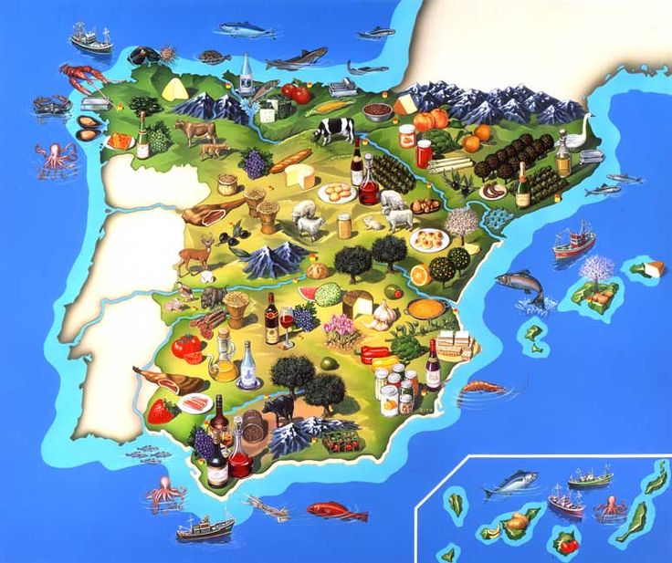
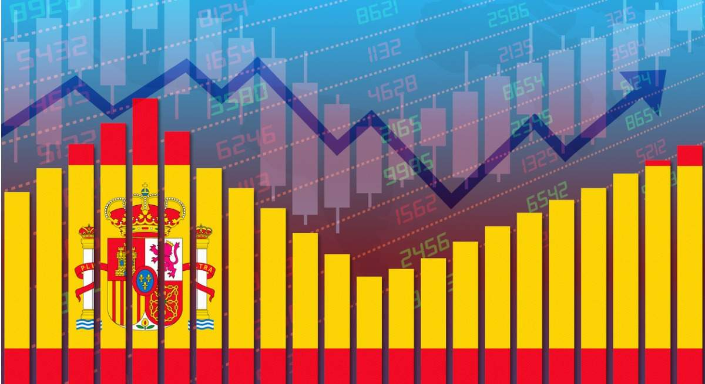
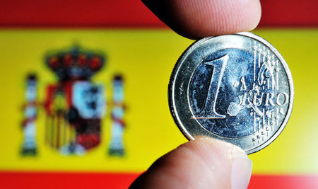

Servicios: El turismo es una de las principales fuentes de ingresos. España es uno de los destinos turísticos más visitados del mundo, especialmente por su clima, playas y patrimonio cultural.
Industria: La industria manufacturera, incluida la automotriz y la maquinaria, es otro sector relevante. Empresas como SEAT, Inditex (Zara), y Telefónica son reconocidas a nivel global.
Agricultura: España es uno de los principales productores de frutas y verduras en Europa, especialmente aceitunas, vino y cítricos.



PIB (Producto Interior Bruto): España es una de las economías más grandes de Europa, ocupando el cuarto lugar en la Unión Europea, después de Alemania, Francia e Italia. Su economía es diversa, con sectores importantes como los servicios, la industria y la agricultura.
Eurozona: España es parte de la zona euro, lo que significa que utiliza el euro (€) como moneda. Esto le da estabilidad, pero también limita el control sobre la política monetaria.


Desempleo: En los últimos años, el desempleo ha sido una preocupación importante, aunque ha disminuido en comparación con la crisis económica de 2008. Sin embargo, el desempleo juvenil sigue siendo elevado.
Crisis económica y recuperación: España pasó por una crisis económica severa en la última década, pero ha ido mostrando señales de recuperación en términos de crecimiento económico y reducción de la deuda pública.
Comercio exterior: España tiene una balanza comercial activa, siendo uno de los mayores exportadores de productos como vehículos, maquinaria, ropa y alimentos. Los principales socios comerciales son la UE, Estados Unidos y China.
Comercio interior:En España es diverso, con fuerte consumo en alimentos, tecnología y servicios. Las grandes ciudades lideran, mientras que las PYMEs enfrentan retos de competencia y digitalización. El comercio electrónico crece, y sectores como agroalimentación, automotriz y tecnología son clave para la economía interna.